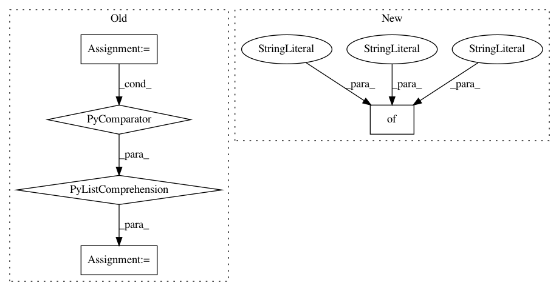

5599ea78bc6ac7aa6133711fc869a2c5863e8c65,examples/variants.py,,,#,6
Before Change
"batch_size": 256,
}
RUN_PARAMS = {
"seed": [1 + 10*i for i in range(5)],
"snapshot_mode": "last",
"snapshot_gap": 1000,
"sync_pkl": True,
}
RUN_PARAMS = {
"swimmer": { // 2 DoF
"snapshot_gap": 200
After Change
"batch_size": 256,
}
RUN_PARAMS_BASE = {
"seed": [1,2,3,4,5],
"snapshot_mode": "gap",
"snapshot_gap": 1000,
"sync_pkl": True,
}
RUN_PARAMS = {
"swimmer": { // 2 DoF
"snapshot_gap": 200
In pattern: SUPERPATTERN
Frequency: 3
Non-data size: 5
Instances
Project Name: rail-berkeley/softlearning
Commit Name: 5599ea78bc6ac7aa6133711fc869a2c5863e8c65
Time: 2018-06-18
Author: kristian.hartikainen@gmail.com
File Name: examples/variants.py
Class Name:
Method Name:
Project Name: rail-berkeley/softlearning
Commit Name: 9634be247a33280cfc60b439e6cb61147bd79f56
Time: 2018-01-29
Author: haarnoja@berkeley.edu
File Name: softqlearning/misc/sampler.py
Class Name:
Method Name: rollout
Project Name: rail-berkeley/softlearning
Commit Name: 85aea8b77a57afbb8d81a1235382b73bff6552be
Time: 2018-07-27
Author: kristian.hartikainen@gmail.com
File Name: examples/mujoco_all_sac_lsp_hierarchy.py
Class Name:
Method Name: main